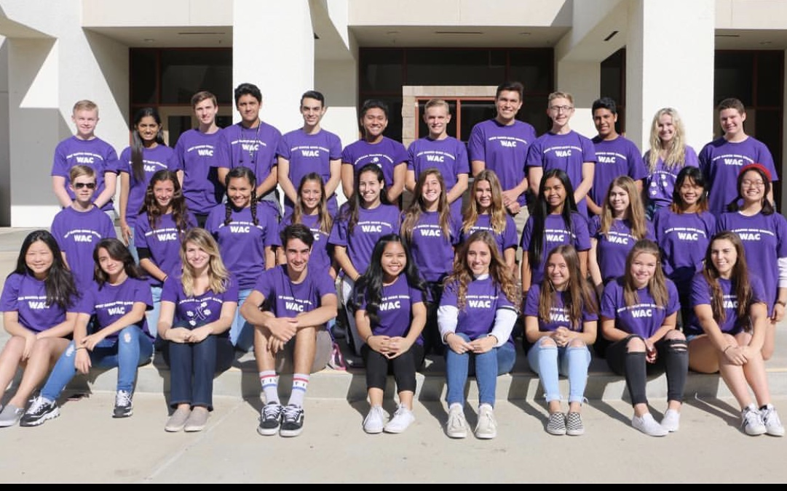

Inderjit Pandher
My name is Inderjit Pandher and I am originally from Santa Clarita, California. Santa Clarita is located a bit north from Los Angeles and is the home of the famous amusement park, Six Flags Magic Mountain. Currently, I am a student enrolled at the University of California, Riverside. I am studying political science in order to earn a law degree. I am a first-year student, who has a sophomore standing. This means that I will graduate approximately 1 year ahead of schedule. I will be in the graduating class of 2022 at UCR. After I graduate from the University of California, Riverside, I plan to go to a law school on the east coast. I would love to experience the east coast. However, I plan to become a lawyer for the state of California. It will be challenging, but I am up for the task. My plans for law are to become a criminal lawyer as I find it a very interesting topic as I watch numerous Netflix series based off of crimes.
As a college student, I have many hobbies that I love to take part in. My favorite hobby is to play basketball. I have been playing basketball since I was around 10 years old and have not lost my love for the sport. During my free time, I love to go shoot around and play pick-up games with the people in the gym. Alongside, I also love to watch basketball. Coming from LA, I support the Los Angeles Lakers and continue to watch almost every game they have on television. Another one of my favorite hobbies is to play video games. Video games have been a huge part of my life since I was about 8 years old. Although my older brother would rarely let me play on his console, I always managed to find a way to get a few hours in when I had the chance. Currently, I still own a gaming console, but I do not find much time to play anymore as I am a devoted college student who is looking for a job, which is hectic.
I have prior work experience with customer service at McDonalds. McDonalds was a great experience as my first job as it allowed me to develop teamwork skills alongside creating great communication skills with the customers. Alongside my work experience, I had volunteered tons of time for my church as well as a club called “key club” at my high school. For key club alone, I had logged in over 200 hours alone, showing my dedication to the club. However, I did also volunteered for other clubs on campus as well as the special olympics hosted in San Fernando Valley, which is about 30 minutes from my hometown.
Experience
Cashier
• Responsible for taking customer's orders in house and drive thru
• Respondible for making customer's drinks as well as ice creams
• Responsible for taking orders out to customers
Volunteer
• Volunteer and raise awareness for non profit organizations
• Plan events to raise awareness for causes
Volunteer
• Helped the disabled get into wheelchairs made to play
• Set up all the activities
• Served food and drinks to the disabled
• Refereed the basketball games
Education
University of California Riverside
Portfolio
